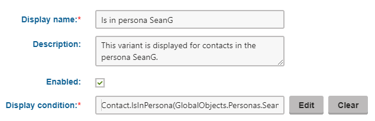

Personalizing web parts and web part zones
Once content personalization is enabled, you can create variants of page components through the Pages application. Variants of page components can be displayed to visitors based on various conditions. For example, you can use different component variants to display different content to different Personas.
There are three possible types of components that you can personalize:
Web parts – can be personalized by users with the Design website permission for the Design module on a page's Design tab.
Web part zones – can be personalized by users with the Design website permission for the Design module on a page's Design tab.
Editor widgets – can be personalized by content editors on pages with editor widget zones. See Personalizing editor widgets for more information.
Multivariate testing and Content personalization
It is not possible to create personalization variants of web parts, zones or widgets that already have Multivariate testing variants.
Overviews of personalization variants
To access a list of all content personalization variants defined on a given page:
Select the page in the content tree of the Pages application.
Open the page's Properties -> Variants tab.
The list includes the variants of all three component types.
Kentico EMS required
Features described on this page require the Kentico EMS license.
Personalizing web parts
Content personalization of web parts allows you to create different versions of web parts with different property settings. To add personalization variants for web parts:
In the Pages application, edit the page containing the web part on the Design tab.
Click the web part's
 icon, hover over Personalization variants and click Add web part variant.
icon, hover over Personalization variants and click Add web part variant.
Adding a new web part variantFill in the display condition and other settings of the personalization variant.
(Personas) Specify an IsInPersona condition, such as {% Contact.IsInPersona(GlobalObjects.Personas.SeanG) %}, where SeanG is the name of the persona.

Click Save & Close.
The standard web part configuration dialog opens – the variant is simply another instance of the original web part.
By default, the variant has the same values in its properties as are set for the original, but you can change them as required.
Click Save & Close once you have configured the variant's web part properties as required.
(Optional) Preview the different web part variants using the personalization slider in the header of the web part.
The configuration of each web part variant has an additional Variant properties tab, where you can modify the settings of the personalization variant.
When configuring a variant of a web part, you can specify a unique Web part layout for each variant on the Layout tab.
Removing a web part also deletes all of its variants.
When you Copy a web part with variants, the system only transfers the original web part.
The system stores the variants of personalized web parts on the given page's page template, so the variants are present on all pages that use the same template.
Personalizing web part zones
If you need to define personalized content that uses completely different web parts for each variant, create variants of entire web part zones. For each zone variant, you can:
Add or remove child web parts
Configure the properties of the web part zone
Configure the properties of the child web parts
Each zone variant may contain any type or amount of web parts, regardless of what is placed inside other variants or the original zone.
When you create a new zone variant, the system automatically copies the content of the original zone. You do not have to rebuild the zone from scratch if you only need to make small modifications.
Note: You cannot personalize zones that already contain personalized web parts. The same also applies in the opposite direction: You cannot add variants for individual web parts inside personalized zones. Additionally, personalization is only supported for standard web part zones and cannot be done for widget zones.
To add personalization variants for web part zones:
In the Pages application, edit the page containing the web part zone on the Design tab.
Click the
icon, hover over Personalization variants and click Add zone variant.Fill in the display condition and other settings of the personalization variant.
(Personas) Specify an IsInPersona condition, such as {% Contact.IsInPersona(GlobalObjects.Personas.SeanG) %}, where SeanG is the name of the persona.
Click Save & Close.
The zone configuration dialog opens for the variant.
By default, the variant has the same values in its properties as are set for the original zone.
Click Save & Close once you have configured the zone variant's properties as required.
(Optional) Preview the different zone variants using the personalization slider in the header of the zone.
The configuration of each zone variant has an additional Variant properties tab, where you can modify the settings of the personalization variant.
The system stores the variants of personalized zones on the given page's page template, so the variants are present on all pages that use the same template.
Previewing personalization variants
You can use the sliders of personalized page components to switch between individual variants (including the original). The page displays the content of the currently selected variants in the Pages application on the page's Design tab, Page tab and in the Preview mode.
The system only resolves the display conditions of personalization variants on the actual live site. This allows you to check how the page looks with different active variants, without having to fulfill the required conditions. Simply set the sliders to the appropriate variants.
When viewing the content of variants while cycling through sliders on the Design tab, make sure that you have the Web part content checkbox selected in the page header.
Editing the content of personalized pages
On pages with personalized web parts that provide editable regions ( Editable text or Editable image ), you can enter unique content for each variant.
In the Pages application, view the personalized page on the Page tab.
Hover over the personalized section of the page.
A menu icon appears.
Select the variant that you wish to edit or view.
The system reloads the page with the content of the chosen variant. You can edit and save the variant's content as required.
Switching between the variants of an editable text region
Reference - Personalization variant properties
The following properties are available when creating or configuring personalization variants:
|
Property |
Description |
|
Display name |
The name displayed in lists of content personalization variants in the administration interface. |
|
Description |
To make the variant easier to use and maintain, you can add an explanation about the scenario for which the variant is intended, describe the differences from the original component, etc. |
|
Enabled |
Indicates if the variant is considered as a possible content option. When evaluating the variant conditions of a personalized component, the system skips disabled variants (even if the requirements set by the condition are fulfilled). |
|
Display condition |
Enter the condition that must be fulfilled for the page to display the variant. By utilizing macro expressions, you can write any condition. In order to work correctly, the result of the expression must be a logical (boolean) value. Example: (CurrentDateTime.Hour >= 9) && (CurrentDateTime.Hour <= 17) Ensures that the variant is only displayed if the current time is between 9 AM and 5 PM. |